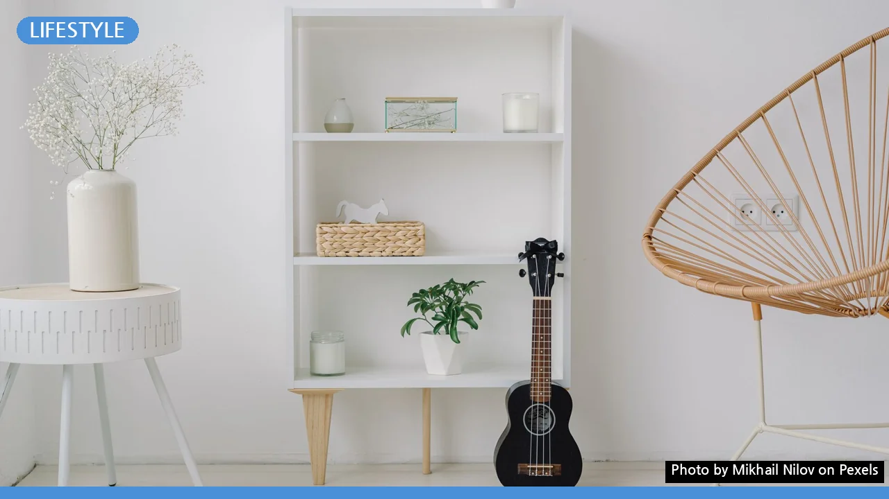
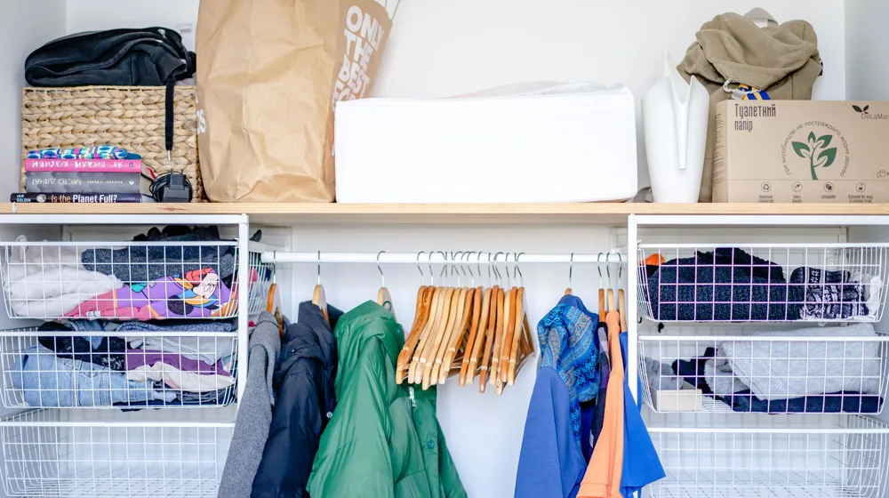

미니멀 라이프, 지금 당장 시작하는 5단계 가이드: 복잡한 일상 정리의 시작
사진: Mikhail Nilov / Pexels (무료 이미지, 출처 표기)
미니멀 라이프 시작이 막막한가요? 복잡한 일상 정리의 첫걸음!

미니멀 라이프를 꿈꾸지만 어디서부터 시작해야 할지 몰라 망설이는 분들이 많습니다. 불필요한 물건과 생각에서 벗어나 진정으로 중요한 것에 집중하고 싶다면, 이 글이 실질적인 첫걸음이 되어 줄 것입니다. 막연한 다짐 대신 지금 바로 적용할 수 있는 구체적인 5단계 가이드를 통해 홀가분하고 만족스러운 삶을 시작해 보세요.
미니멀 라이프, 왜 시작해야 할까요?
미니멀 라이프는 단순히 물건을 비우는 것을 넘어, 삶의 우선순위를 재정립하고 의미 있는 것에 집중하는 생활 방식입니다. 과도한 소유는 스트레스와 시간 낭비, 재정적 부담으로 이어지기 쉽습니다. 물건이 줄어들면 관리할 것이 적어져 시간적 여유가 생기고, 충동구매가 줄어 재정적으로도 자유로워집니다.
정신적으로도 긍정적인 영향을 미칩니다. 어지러운 환경은 마음을 산만하게 만들지만, 정돈된 공간은 명확한 사고를 돕습니다. 나에게 정말 필요한 것과 불필요한 것을 구분하는 과정에서, 삶의 본질적인 가치를 찾아가는 기회가 될 수 있습니다.
미니멀 라이프 핵심 원칙: '비움'과 '채움'의 균형
미니멀리즘은 무조건적인 비움을 강요하지 않습니다. 오히려 나에게 '꼭 필요한 것'이 무엇인지 정의하고, 그것으로 삶을 채워나가는 과정입니다. 물리적인 물건뿐만 아니라 디지털 정보, 인간관계, 시간 사용 등 삶의 전반에 걸쳐 이 원칙을 적용할 수 있습니다.
핵심은 '소유를 위한 소유'에서 벗어나, 물건이 가진 기능과 그 물건이 나에게 주는 가치에 집중하는 것입니다. 무엇을 비워내야 할지 모르겠다면, '이것이 나에게 행복과 가치를 주는가?'라는 질문을 던져보면 좋습니다.
초보자를 위한 미니멀 라이프 5단계 실천 가이드
미니멀 라이프를 시작하는 것은 거창한 결심보다 작은 실천이 중요합니다. 다음 5단계 가이드를 따라 차근차근 시작해 보세요.
-
마음가짐 정립 및 목표 설정: 미니멀 라이프를 통해 무엇을 얻고 싶은지 구체적인 목표를 세우세요. 예를 들어, '옷장 정리 후 매일 입을 옷을 쉽게 찾고 싶다', '책상 위를 깨끗하게 비워 업무에 집중하고 싶다' 등으로 설정할 수 있습니다. 작은 목표부터 시작하면 성취감을 느끼기 쉽습니다.
-
한 번에 한 구역씩 집중하기: 집 전체를 한 번에 정리하려고 하면 쉽게 지치기 마련입니다. 서랍 한 칸, 책상 위, 옷장 선반 등 작은 구역을 정해 집중적으로 정리하는 것이 효과적입니다. 구역을 비우고 나면 다음 구역으로 넘어가는 방식으로 진행하세요.
-
물건 분류하기: '필요', '불필요', '고민'으로 나누기: 모든 물건을 꺼내놓고 세 가지 카테고리로 분류합니다. '필요'한 물건은 제자리에 돌려놓고, '불필요'한 물건은 즉시 처분을 결정합니다. '고민'되는 물건은 따로 모아두고 일정 기간(예: 한 달) 후에 다시 검토합니다. 이 기간 동안 사용하지 않았다면 불필요한 것으로 간주해도 좋습니다.
-
불필요한 물건 처분하기: 버리기로 결정한 물건은 빠르게 처리하는 것이 중요합니다. 재활용, 기부, 판매 등 다양한 방법으로 처분할 수 있습니다. 물건을 판매할 때는 중고거래 앱(예: 당근마켓, 중고나라)을 활용하면 좋습니다.
-
새로운 물건 들일 때 신중하기: 비움을 실천했다면, 다시 채우는 과정에서도 신중해야 합니다. '하나를 버리고 하나를 들인다'는 원칙을 적용하거나, 물건을 구매하기 전 '정말 필요한가?', '다른 용도로 대체할 수 없는가?' 등의 질문을 던져보세요. 충동구매를 줄이는 것이 미니멀 라이프 유지에 핵심입니다.
미니멀 라이프, 더 쉽게 시작하는 아이템 분류법
물건 분류가 어렵다면, 다음 기준을 활용하여 더욱 쉽게 접근할 수 있습니다. 2026년 9월 기준으로 많은 미니멀리스트들이 활용하는 방법들입니다.
미니멀 라이프, 지속 가능한 습관으로 만드는 법
미니멀 라이프는 한 번의 정리가 아니라 지속적인 습관입니다. 다음 방법들을 통해 미니멀한 삶을 꾸준히 유지할 수 있습니다.
- 정기적인 비움의 날 지정: 매주 또는 매월 특정 날을 정해 작은 구역이라도 정리하는 시간을 갖습니다.
- 경험에 투자하기: 물건 구매 대신 여행, 취미, 교육 등 경험을 통해 삶의 만족도를 높입니다.
- 디지털 미니멀리즘 실천: 스마트폰 앱 정리, 불필요한 사진/파일 삭제, 이메일 구독 해지 등으로 디지털 공간도 비워냅니다.
- 가족과 소통하기: 가족 구성원 모두의 동의가 중요합니다. 미니멀 라이프의 장점을 설명하고, 각자의 물건에 대한 존중을 바탕으로 함께 실천 방안을 찾아보세요.
미니멀 라이프, 자주 묻는 질문
Q1: 가족 구성원이 미니멀 라이프에 동의하지 않으면 어떻게 해야 하나요?
A1: 가족의 물건을 일방적으로 정리하는 것은 갈등을 유발할 수 있습니다. 먼저 본인의 공간부터 정리하며 긍정적인 변화를 보여주는 것이 좋습니다. 정리된 공간의 장점을 직접 경험하게 한 후, 천천히 대화를 통해 함께 할 수 있는 부분을 찾아보는 것이 현명합니다.
Q2: 혹시 나중에 필요해질까 봐 버리지 못하는 물건은 어떻게 하나요?
A2: 이른바 '언젠가 병'이라고 불리는 현상입니다. '언젠가'는 대개 오지 않습니다. 정말 필요한 물건이라면 다시 구매하는 비용과 공간을 차지하는 비용을 비교해 보세요. 대부분의 경우, 다시 구매하는 것이 공간을 차지하는 것보다 훨씬 효율적입니다.
Q3: 취미 용품이나 수집품도 줄여야 하나요?
A3: 취미 용품이나 수집품은 개인의 삶에 큰 만족과 가치를 주는 경우가 많습니다. 무조건적으로 줄이기보다는, '정말 나에게 기쁨을 주는가?', '어느 정도가 적당한가?'를 스스로에게 질문해 보세요. 불필요한 중복이나 관심 없는 품목만 정리하는 식으로 접근할 수 있습니다. 미니멀리즘은 자기만의 기준을 찾는 과정입니다.
미니멀 라이프는 단순히 물건을 줄이는 기술이 아닌, 삶의 진정한 의미를 찾아가는 여정입니다. 지금 바로 작은 한 걸음을 내딛어보세요. 불필요한 것들로부터 자유로워지는 당신의 삶은 더욱 풍요로워질 것입니다.
🔗 이 글도 함께 보면 좋아요: 미루는 습관, 혹시 당신도? 지금 당장 시작하는 5단계 실천법